センス・オブ・ワンダーナイト
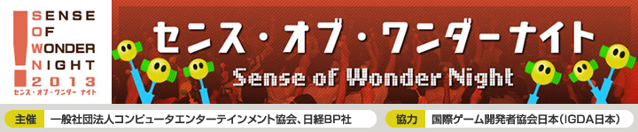
過去のSOWN
SOWN2012
5回目を迎え、ますますの盛り上がりを見せたSOWN2012。
プレゼンテーションの様子を写真とともにご紹介します。
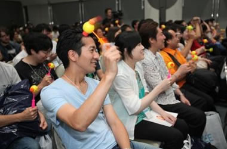
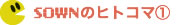
音の出る「ピコピコハンマー」を振って、プレゼンターを応援。「センス・オブ・ワンダー」を感じる瞬間にハンマーを鳴らします！
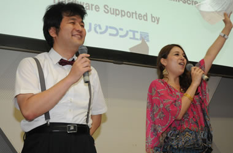
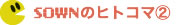
司会者はこの２人。選考委員でもある国際ゲーム開発者協会日本（IGDA日本）副代表、新清士氏（左）。フランスと石垣島のハーフタレントのイザベル・マサボさん（右）。
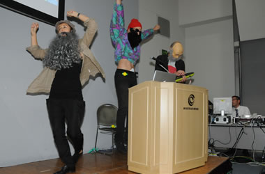
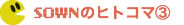
オーディエンス賞、NHN Japan賞の２冠を達成したArtur Mine and Dmitry Verbitsky(Beast Mode)の「Grandmaster」。ホームレスに扮したプレゼンターがテーマソングを熱唱！

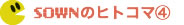
GMOインターネット賞を獲得した雑魚雑魚は覆面姿で登場。オーディエンスをアッと言わせた。iPhoneを投げたり回したりしてプレイするゲーム「TAISO」を披露した。
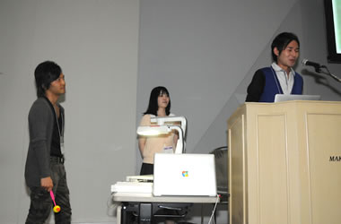
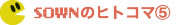
石田翔氏（い～といん）がプレゼンした「ちゅまむ chumam」はiPhone２台で遊ぶゲーム。GREE賞を受賞。
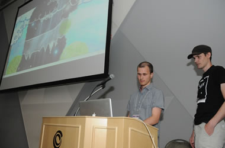
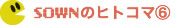
スウェーデンから参加したAnders Ekermo & Juha Kangasは、「Backworlds」をプレゼン。２つの世界をうまく行き来してキャラクターを進めていくゲームでJoju Games賞を獲得した。
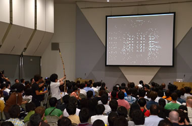
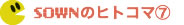
日本マイクロソフト賞に選ばれた安本匡佑氏は、弓型のインターフェイスを携えて登場。狙いを定めて弓を引くと暗闇に光を打ち込める「光弾の射手 The Light Shooter」を紹介した。
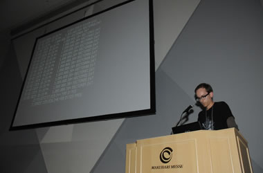
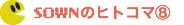
美しいグラフィックで会場を魅了したEzra Hanson-White(sole creator)の「Memory of a Broken Dimension」。コマンドを打ち込むと次第に現れる全体像はオーディエンスを惹き付けた。UBM TechWeb Game Network賞を受賞。
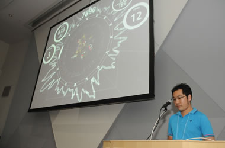
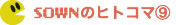
2011年から２年連続でプレゼンを行ったなんも/柳原隆幸氏(FullPowerSideAttack.com)。紹介した「BREAKS」はボールを使って画面上のブロックを壊すゲームだ。プレーヤーのアクションがBGMを作り出すという試みに挑戦した。
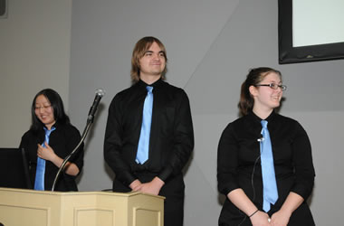
お揃いの衣装で登場したのはDigiPen Team Terrabyte。チームが紹介した「Douse」は幻想的な世界の中でキノコや葉っぱを足場に冒険を繰り広げるもの。
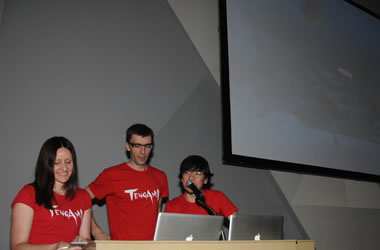
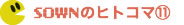
純和風の世界を冒険する「Tengami」をプレゼンしたJennifer Schneidereit氏(Nyamyam) 。絵本の仕掛けをふんだんに取り込んだこのゲームは、なんと印刷して絵本に組み立てることができるという。

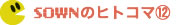
Noah Sasso氏(Strange Flavor) が紹介した「BaraBariBall」の１コマ。ボールをめぐって２人のプレーヤーが対戦する。他プレゼンターが実際にゲームに挑戦！
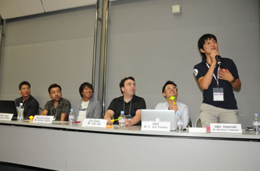
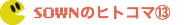
選考委員からはさまざまな質問やアドバイスが飛び出る。
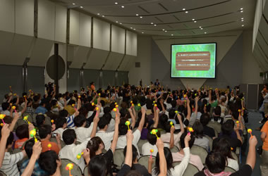
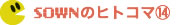
独創的なアイデアに盛り上がる会場。ピコピコ音があふれる。
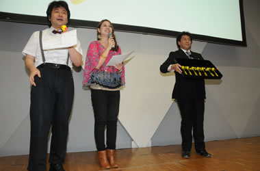
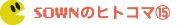
副賞には「金のピコピコハンマー」を用意。
企業賞、オーディエンス賞受賞者に授与された。
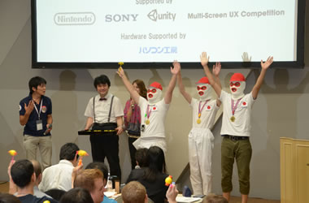
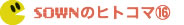
賞に選ばれ喜ぶプレゼンター。
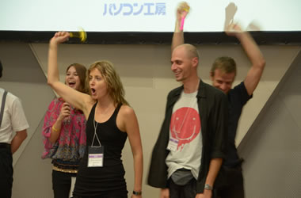
嬉しくて思わずガッツポーズ！
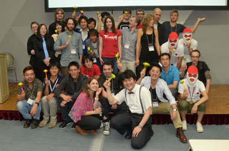

最後は司会２人と記念撮影。SOWN2012は大盛況で幕を下ろした。